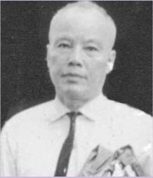
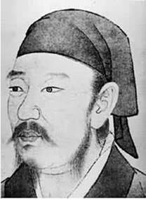

Đọc danh mục sách của cụ Nguyễn Hiến Lê, chúng ta thấy có khá nhiều tác phẩm cụ ký tên chung với cụ Giản Chi, như: Đại cương triết học Trung Quốc (1965), Chiến Quốc sách (1968), Sử Kí của Tư Mã Thiên (1970), Hàn Phi, Tuân Tử… Trong Hồi kí, cụ Nguyễn Hiến Lê nói về sự hợp tác giữa hai cụ như sau:
“Biết cái vốn Hán tự của ông (tức cụ Giản Chi), nhất là Bạch thoại, hơn tôi nhiều, tôi đề nghị với ông cùng viết bộ Đại cương triết học Trung Quốc, ông nhận lời, và chúng tôi hợp tác với nhau về cổ học Trung Quốc cho tới sau ngày giải phóng…
Sự hợp tác đó rất vui và có lợi cho cả hai. Nhờ có ông, tôi mới mạnh bạo tiến vào khu vực đó, và nhờ tôi thúc đẩy, từ đó ông mới sáng tác mạnh. Ngoài những tác phẩm viết chung với tôi, ông còn dịch Ả Q. chính truyện (của Lỗ Tấn), Tuyển tập Lỗ Tấn, Cái đêm hôm ấy (S. Maugham)… Chúng tôi nhận định giống nhau, biết châm chước ý kiến của nhau và cùng có lương tâm như nhau. Tôi nghĩ nếu không gặp ông thì công việc nghiên cứu của tôi đã theo một hướng khác, vì không hợp tác với ông thì tôi không thể hợp tác với người nào khác trong ngành Cổ học Trung Quốc; còn ông cũng nhận rằng trước khi gặp tôi ông không có ý bước vào khu vực đó. Thực là một duyên tiền định, có lẽ chưa hề thấy trong văn học sử nước nhà từ đầu thế kỉ đến nay.
Ông cho tôi là một bạn tương tri của ông, có lần gởi cho tôi hai câu này:
Nhớ đâu thuở ấy “xào” Trung triết,
Đâu chỉ thời xưa mới Thúc Nha.
Tôi cũng coi ông là bạn tương tri, khi có người bàn với ông giới thiệu tôi về Giải tuyên dương sự nghiệp, ông gạt đi: “Bác ấy không chịu đâu, đừng giới thiệu”.
Trước đó cả hai anh em tôi đã từ chối Giải thưởng văn chương toàn quốc về bộ Đại cương triết học Trung Quốc.
Khi mới soạn xong bộ đó, trao nhau bản thảo để đọc lại cho nhau, ông khen phần “Vài nét sơ lược về sự phát triển của triết học Trung Hoa” viết chưa kĩ nhưng được lắm; và tôi cũng nhận phần Vũ trụ luận và Tri thức luận của ông, khó có ai viết hơn ông được”.
Cụ Nguyễn Hiến Lê còn cho biết thêm:
- Về bộ Đại cương triết học Trung Quốc: “Do tôi đề nghị và phân công: ông Giản Chi lãnh phần Vũ trụ luận (II) và Tri thức luận (III), tôi vốn thích cái gì cụ thể, thực tiễn, lãnh phần Nhân sinh luận (IV), Chính trị luận (IV). Vì công việc của tôi dễ hơn của ông Giản Chi, nên tôi lãnh thêm phần I: Vài nét sơ lược về sự phát triển của triết học Trung Hoa, và phần VI: Tiểu sử các triết gia; hai phần sau này điều ngắn. Toàn bộ gồm hai cuốn: Thượng trên 800 trang và Hạ gần 900 trang. In cả chữ Hán, để riêng ở cuối mỗi cuốn”.
- Về hai bộ Chiến Quốc sách và Sử kí của Tư Mã Thiên: “Tôi giới thiệu bộ Chiến Quốc sách và trích dịch, chú thích hết các bài hay; ông Giản Chi tuyển dịch độ một phần tư bộ Sử Kí và chú thích rất kĩ, tôi giới thiệu tác giả cùng tác phẩm. Người này làm xong, đưa người kia coi lại”.
- Về hai cuốn Hàn Phi và Tuân Tử: “Ông Giản Chi và tôi phân công nhau: ông viết về Tuân Tử rồi đưa tôi coi lại, tôi viết về Hàn Phi rồi đưa ông coi lại”.
Do những tác phẩm viết chung với cụ Nguyễn Hiến Lê về triết học Trung Quốc, do những năm dạy Trung triết ở Đại học Sài Gòn và Huế, và có lẽ do nhiều lí do khác nữa mà nhà giáo Nguyễn Hữu Tá trong bài “Xuân này, học giả Giản Chi tròn trăm tuổi”[1], bảo rằng: “Nghiên cứu và hiểu biết triết học cổ Trung Hoa thật sự uyên thâm và thấu triệt, có lẽ thế kỷ 20 này ở VN ta chỉ có hai người: cố giáo sư Cao Xuân Huy và giáo sư Giản Chi”. Ông Nguyễn Hữu Tá còn cho biết: “Trong vùng thành thị miền Nam từ 1954 - 1975 cụ là người dịch và nghiên cứu về Lỗ Tấn một cách công phu và đầy đủ hơn cả”, và “Từ 1965, nhiều thế hệ sinh viên Sài Gòn, Huế ở các trường đại học Văn khoa và Đại học Sư phạm đã may mắn được học giáo sư Giản Chi. Không ít người nay là những trí thức có uy tín, đã nhắc về người thầy cũ của mình với tất cả sự kính trọng và cảm phục, về đức độ cũng như tài năng”. Cụ Giản Chi mất 22 tháng 10 năm 2005, hưởng thọ 102 tuổi. Một một cựu sinh viên Đại học Sư phạm Sài Gòn, ban Việt Hán, khóa 1973-1976, cô Nguyễn Thị Tuyết, trong bài “Tưởng nhớ Thầy Giản Chi Nguyễn Hữu Văn”, bảo cụ có cách dạy “không giống ai”. Cô viết:
“Thầy dạy Triết học Đông phương. Giờ học với Thầy sinh động hơn hẳn những giờ học khác, bởi cách dạy của Thầy không giống ai.
“Tôi còn nhớ khi dạy Kinh Dịch, Thầy cho chúng tôi một tháng để đọc hết tài liệu (cours) của Thầy biên soạn cho sinh viên và một danh sách dài ngoằng tên các quyển sách đọc thêm. Khi vào lớp, Thầy dạy chúng tôi ứng dụng vào việc “bốc quẻ”. Thầy kể nhiều giai thoại về những quẻ kiết, quẻ hung trong lịch sử Trung Quốc, trong Sử ký Tư Mã Thiên, trong Tam quốc diễn nghĩa, trong Thủy hử… Thầy nói rất nhiều về “Đạo” của người quân tử. Thầy yêu cầu chúng tôi đọc rất nhiều sách về nhân sinh quan của người Trung Quốc. Sau khi sinh viên đọc xong những tài liệu, sách vở, Thầy bắt đầu kiểm tra chúng tôi bằng những vấn đề do Thầy đặt ra.

Cụ Giản Chi
Rồi Thầy trao đổi với chúng tôi về văn chương Trung Quốc và văn chương Việt Nam đã ảnh hưởng triết lý Đông phương như thế nào. Đặc biệt hơn nữa, Thầy còn ngâm thơ do chính Thầy sáng tác…”[2].
*
Dưới đây tôi xin chép thêm, cũng trong Hồi kí, lời cụ Nguyễn Hiến Lê giới thiệu cuốn Tuân Tử:
“Khổng học tới Mạnh Tử trải một lần biến, tới Tuân Tử trải một lần biến nữa. Khổng Tử chỉ nói “tính tương cận, tập tương viễn” (bản tính con người giống nhau, do tập nhiễm mới khác xa nhau), và trọng đức nhân hơn cả; Mạnh Tử đưa ra thuyết tính thiện, ai sinh ra cũng có sẵn bốn “đầu mối”: nhân, lễ, nghĩa, trí (tứ đoan), ông ít nói đến nhân mà nói nhiều đến nghĩa; Tuân Tử, trái lại chủ trương tính ác (tính người vốn ác), và “thiên nhân bất tương quan” (người và trời không quan hệ gì với nhau), ông ít nói đến nhân, nghĩa mà rất trọng lễ.
Mạnh là một triết gia kiêm chính trị gia; Tuân hoàn toàn là một triết gia, học rất rộng, có nhiều tư tưởng độc đáo, bàn cả về tri thức, danh (công dụng của danh, nguyên lí chế danh…), về biện thuyết (phạm vi của biện thuyết, phương pháp biện thuyết), nên được nhiều người tôn là học giả uyên bác nhất thời Chiến Quốc.
Cho tới đầu đời Hán, học thuyết của Mạnh và của Tuân được trọng ngang nhau; từ Đường trở đi, Mạnh được tôn mà Tuân bị nén; nhưng gần đây ở Trung Hoa, Tuân lại được nghiên cứu hơn Mạnh, vì tư tưởng của Tuân hợp thời hơn: tìm hiểu các hiện tượng thiên nhiên, trọng khoa học, lễ (gần như pháp luật, hiến pháp…).
Ở nước ta, vì chịu ảnh hưởng nặng của Tống Nho, các nhà Nho cũng khinh quân, buộc Tuân cái tội đã đào tạo Lý Tư và Hàn Phi, hai chính trị gia giúp Tần Thuỷ Hoàng dựng nghiệp đế rồi đốt sách, chôn Nho nên tới nay, ngoài ít chục trang trong Nho giáo của Trần Trọng Kim,Khổng học đăng của Phan Sào Nam, chưa có một cuốn nào chuyên viết về Tuân Tử.
Chúng tôi soạn bộ Tuân Tử để bổ khuyết điểm đó. Tác phẩm dày khoảng 400 trang viết tay; phần học thuyết chiếm khoảng 150 trang, còn lại là phần trích dịch”[3].
“Ngoài ít chục trang trong Nho giáo của Trần Trọng Kim, Khổng học đăng của Phan Sào Nam” viết về Tuân Tử, như cụ Nguyễn Hiến Lê nói trên, ta còn thấy trong Cổ học tinh hoa” của Nguyễn Văn Ngọc và Trần Lê Nhân có ba bài được ghi là trích từ sách Tuân Tử: bài Tu thân, bài Âm nhạc và bài Đầy thì đổ[4]; và câu danh ngôn, danh lí: “Ba ba, thuồng luồng cho vực còn nông, làm tổ dưới đáy, chim cắt diều hâu cho núi còn thấp làm tổ trên đỉnh; thế mà khi chết cũng chỉ vì một cái mồi”[5].
Câu danh ngôn đó trong thiên Pháp hành, còn câu sau đây, trong thiên Vương chế, hai cụ Giản Chi và Nguyễn Hiến Lê cho là bất hủ:
君者，舟也；庶人者，水也；水則載舟，水則覆舟 (Quân giả, chu dã; thứ nhân giả, thuỷ dã; thuỷ tắc tải chu, thuỷ tắc phúc chu: Vua là thuyền, dân là nước, nước chở thuyền mà nước cũng lật thuyền).
Ngoài hai câu trên, trong bài “Tuân Tử danh ngôn”[6] còn liệt kê đến khoảng 60 câu, trong đó có một số câu trích trong thiên Khuyến học, ví dụ như (lời dịch tôi chép trong sách):
青，取之於藍而青於藍 (Thanh, thủ chi ư lam nhi thanh ư lam: Màu xanh lấy từ màu chàm ra mà xanh hơn chàm).
積土成山，風雨興焉；積水成淵，蛟龍生焉；積善成德，而神明自得，聖心備焉 (Tích thổ thành sơn,phong vũ hưng yên; tích thủy thành uyên, giao long sinh yên; tích thiện thành đức, nhi thần minh tự đắc, thánh tâm bị yên: Đắp đất thành núi, núi cao thì có mưa to gió lớn; tích nước thành vực, vực sâu thì sinh thuồng luồng cá sấu; chất chứa việc thiện, thì thành công đức mà hội thông được thần minh).
不積跬步，無以至千里；不積小流，無以成江海 (Bất tích khuể bộ, vô dĩ chí thiên lí; bất tích tiểu lưu, vô dĩ thành giang hải: Không góp từng nửa bước thì không tới được nghìn dặm, không tích tụ các dòng nước nhỏ thì không thành được sông biển).
蓬生麻中，不扶而直；白沙在涅，與之俱黑。蘭槐之根是爲芷，其漸之滫， 君子不近，庶人不服。(Bồng sinh ma trung, bất phù nhi trực[7]; bạch sa tại nát, dữ chi câu hắc. Lan hòe chi căn thị vi chỉ, kì tiệm chi tưu, quân tử bất cận, thứ nhân bất phục: Cỏ bồng sinh ở đám gai, không chống đỡ mà ngay; cát trắng trong bùn, cũng bùn cũng đen. Bạch chỉ là rễ cỏ lan hoè, nếu ngăm nước tiểu thì người quân tử chẳng gần, bọn người thường cũng chẳng giắt).
君子博學而日參省乎己，則知明而行無過矣 (Quân tử bác học nhi nhật tham tỉnh hồ kỉ, tắc tri minh nhi hành vô quá hĩ: Người quân tử học cho rộng mà ngày ngày xét nét nhiều lần động tác của thân tâm thì trí tuệ sáng suốt mà hành vi được sửa sang, không phạm lỗi lầm).
Cuốn Tuân Tử giúp chúng ta tìm hiểu cuộc đời và học thuyết của Tuân Tử, điều đó hiển nhiên rồi, thiển nghĩ, nó còn giúp được ít nhiều cho những ai thích tìm hiểu về Kinh Thi nữa, vì Tuân Tử thường hay dẫn Kinh Thi trong lúc trình bày học thuyết của mình. Ngay trong thiên đầu tiên, thiên Khuyến học, có đến ba đoạn dẫn Kinh Thi, dưới đây tôi xin chép lại một đoạn:
“Chưa nên nói mà nói là hấp tấp, nên nói mà không nói là khép kín, không xem khí sắc (người đối thoại) mà nói là nói như người mù. Người quân tử không hấp tấp, không khép kín, không nói như người mù, cẩn thận giữ mình mà làm theo đạo lí. Kinh Thi nói:
Chẳng vội vàng,
Chẳng trễ tràng,
Đáng nhận ân huệ,
Của đấng quân vương.
là nghĩa như vậy”.
Những câu trích trong Kinh Thi đó, để tiện tham khảo, tôi sẽ chép lại nguyên văn theo các bản tìm thấy trên mạng và tạm phiên âm.
Trong ebook Trang Tử, tôi đã có dịp thưa: “Về việc dịch lại, tuy cụ Nguyễn Hiến Lê không nói ra, nhưng tôi thấy có nhiều câu trong bộ Trang Tử này không giống với những câu tương ứng đã được cụ và cụ Giản Chi dịch trong bộ Đại cương triết học Trung Quốc (ĐCTHTQ) từ năm 1962-63”. Trong cuốn Tuân Tử này cũng có vài câu được “dịch lại”. Ví dụ như đoạn sau đây, trích trong sách Tuân Tử - thiên Tính ác, được dẫn trong bộ ĐCTHTQ:
“Đồ chi nhân khả dĩ vi Vũ hạt vị dã? Viết: phàm Vũ chi sở dĩ vi Vũ giả, dĩ kì nhân, nghĩa, pháp, chính dã. Nhiên tắc nhân, nghĩa, pháp, chính, hữu khả tri, khả năng chi lí…”[8].
và được dịch là: “Người ngoài đường – tức bất kì người thường nào – cũng có thể thành vua Vũ được, nghĩa là làm sao? Đáp: Vua Vũ sở dĩ thành vua Vũ là nhờ nhân, nghĩa, pháp, chính. Nhân, nghĩa, pháp, chính có cái lẽ biết được, làm được…”.
Còn trong cuốn Tuân Tử, đoạn đó được ngắt câu hơi khác (giữa hai chữ “pháp chính” không có dấu phẩp) nên lời dịch cũng hơi khác (đặc biệt bốn yếu tố: nhân, nghĩa, pháp, chính chỉ còn ba: nhân, nghĩa và pháp chính): “Người ngoài đường (người dân thường) có thể thành vua Vũ được nghĩa làm sao? – Thưa: câu ấy ý nói rằng vua Vũ thành được vua Vũ là vì đã làm điều nhân, nghĩa, phép thẳng ngay. Thế nghĩa là điều nhân nghĩa, phép thẳng ngay có cái lẽ hiểu được, giữ được…”.
Theo một chú thích trong phần dịch thiên Khuyến học, hai cụ Giản Chi và Nguyễn Hiến Lê cho biết câu sau đây cũng được dịch lại: “Lễ giả, pháp chi đại phân, loại chi cương kỉ” (禮者，法之大分、類之綱紀也). Trong ĐCTHTQ, chữ 分 phiên âm là “phận” và cả câu được dịch là: “Lễ là cái phận lớn của điển pháp, cái kỉ cương của quần loại”; trong cuốn Tuân Tử này, chữ 分 phiên âm là “phân” và cả câu được dịch là: “Kinh Lễ phân định chế độ và là mối giường của điển pháp”.
Một dị biệt khác: Trong bộ ĐCTHTQ, phần Nhân sinh luận (IV), chữ “Tôn” (trong Tôn Khanh) được chú thích như sau: “Người đời Hán kiêng tên vua Tuyên Đế gọi là Tôn (chính là Tuân)”; còn trong cuốn Tuân Tử, cũng trong chú thích, lại bác bỏ thuyết kị huý: “Xưa, hai chữ Tuân và Tôn đọc gần như nhau. Người ta đọc trại Tuân Khanh thành Tôn Khanh, cũng như người Yên đọc trại (Kinh) Kha ra (Kinh) Khanh. Tư Mã Thiên rồi Nhan Sư Cổ cho rằng sở dĩ đọc Tôn Khanh thay vì Tuân Khanh là vì kiêng tên vua Hán Tuyên đế (huý là Tuân 詢). Thuyết này không vững: Đời Hán chưa có lệ kiêng tên, những tên Lí Tuân (李荀), Tuân Sảng (荀爽), Tuân Duyệt (荀說) v.v… đời Hậu Hán vẫn viết nguyên chữ và đọc nguyên âm (tuân) cả”.
Đối với những chỗ dị biệt giữa tác phẩm viết trước và tác phẩm viết sau, dĩ nhiên là ta nên theo tác phẩm viết sau.
Cũng về việc dịch, giữa cuốn Hàn Phi Tử và cuốn Tuân Tử, cũng có chỗ hơi khác, ví dụ như đoạn sau đây trích trong sách Hàn Phi Tử, thiên Lục Phản:
“Phụ mẫu chi ư tử dã, sản nam tắc tương hạ, sản nữ tắc sát chi. Thử câu xuất phụ mẫu chi hoài nhẫm, nhiên nam tử thụ hạ, nữ tử sát chi giả, lự kì hậu tiện, kế chi trường lợi dã. Cố phụ mẫu chi ư tử dã, do dụng kế toán chi tâm dĩ tương đãi dã, nhi huống vô phụ tử chi trạch hồ”[9];
Đoạn đó được cụ Nguyễn Hiến Lê dẫn trong cuốn Hàn Phi Tử và dịch như sau: “Cha mẹ đối với con, sanh con trai thì mừng, sanh con gái thì giết, trai gái đều trong lòng cha mẹ mà ra, mà con trai thì mừng, con gái thì giết, là do nghĩ đến sau này, đứa nào có lợi lâu dài cho mình hơn. Vậy cha mẹ đối với con mà còn đem lòng tính toán lợi hại, huống hồ là những người không có tình cha con với nhau”.
Trong cuốn Tuân Tử, cụ Giản Chi cũng dẫn đoạn đó và dịch là: “Cha mẹ đối với con, sinh trai thì mừng, sinh gái thì giết. Đều là mang ở trong lòng mình ra cả mà trai thì mừng, gái thì giết là nghĩ đến cái tiện lợi của mình sau này. Cha mẹ đối với con mà còn có lòng tính toán, huống hồ là đối với người ngoài”.
Lời dịch tuy không giống nhau, nhưng ta không thể nói là người này hay người kia “dịch lại” vì cuốn Hàn Phi và cuốn Tuân Tử có thể xem như được viết cùng một lúc, và nhất ý nghĩa của hai lời dịch đó lại giống nhau, ta muốn theo cuốn nào cũng được. Câu “Chúng tôi nhận định giống nhau, biết châm chước ý kiến của nhau” trong Hồi kí Nguyễn Hiến Lê, có lẽ còn hàm nghĩa người này tôn trọng cách diễn đạt của người kia…
*

Tuân Tử
(Theo Đại Cương Triết Học Trung Quốc,
Nxb Thanh Niên, năm 2004, quyển 1, trang 635)
Cuốn Tuân Tử khá dầy, 408 trang, gồm hai phần: Phần I: Giới thiệu học thuyết, và phần II: Dịch. Trong phần I, hầu hết các câu trích dẫn đều được ghi thêm phần phiên âm Hán Việt và nguyên văn chữ Hán. Các câu (hoặc đoạn) chữ Hán được in riêng - trên 26 trang - ở cuối sách, nhưng sách in thiếu khá nhiều - căn cứ vào số thứ tự thì lẽ ra phải có đến 240 câu (hoặc đoạn) chữ Hán, nhưng trong sách chỉ in có 212 câu (hoặc đoạn) – và các câu (hoặc đoạn) được in đó không có dấu ngắt câu. Trong ebook này, tôi sẽ bổ sung các chỗ in thiếu đó, kể cả các câu (hoặc đoạn) không đánh số, ghi thêm dấu ngắt câu dựa theo phần phiên âm Hán Việt, và đặt các câu (hoặc đoạn) chữ Hán đó trong phần chú thích.
[1] http://vietbao.vn/Xa-hoi/Xuan-nay-hoc-gia-Gian-Chi-tron-tram-tuoi/40018132/157/.
[2] Nguồn: //daihocsuphamsaigon.org/cuusinhvien/nhothaygianchi.pdf.
[3] Đoạn giới thiệu tác phẩm Tuân Tử ở trên (từ “Khổng học tới Mạnh Tử” đến “phần trích dịch”), Nhà xuất bản cắt bớt vài chỗ và in ở bìa sau.
[4] Bài Tu thân trích trong thiên Tu thân, bài Đầy thì đổ trích trong thiên Hữu toạ, còn bài Âm nhạc thì tôi không biết trích từ thiên nào.
[5] Nguyên văn: “Ngư miết ngoan đà do dĩ uyên vi thiển nhi quật kì trung, ưng diên do dĩ san vi ti nhi tăng sào kì thượng, cập kì đắc dã tất dĩ nhị” 魚鱉黿鼉猶以淵爲淺而堀其中，鷹鳶猶以山爲卑而增巢其上，及其得也必以餌。
[6] Tuân Tử danh ngôn: 荀子名言 (http://www.justsayout.com/famous/1186/).
[7] Xem thêm lời giải thích câu “Bồng sinh ma trung, bất phù tự trực” và câu “Binh bất huyết nhẫn” trong bài “Thành ngữ Hán-Việt thường dùng” tại (http://tiengtrung.vn/diendan/van-hoa-trung-quoc/2887-thanh-ngu-trung-quoc-post5011.html#poststop).
[8] Nguyên văn chữ Hán chép trong bộ ĐCTHTQ (trong cuốn Tuân Tử không có dấu ngắt câu): 塗之人可以爲禹，曷謂也？曰：凡禹之所以爲禹者，以其爲仁義法正也。然則仁義法正，有可知可能之理…
[9] Nguyên văn chữ Hán chép trong cuốn Hàn Phi Tử: 父母之於子也， 產男則相賀, 產女則殺之。 此俱出父母之懷衽，然男子受賀，女子殺之者，慮其後便，計之長利也. 故父母之於子也， 猶用計算之心以相待也，而況無父子之澤乎。
Goldfish
Tháng 5 năm 2011